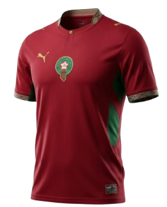
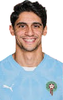

La Selección de Marruecos
La Selección de Marruecos es uno de los equipos más emblemáticos de África. Su crecimiento, su identidad y su carácter competitivo la transformaron en una selección respetada en todo el mundo.

Una selección con carácter, estadio, hinchada y una identidad muy marcada. Su recorrido combina tradición africana, talento técnico y una presencia cada vez más fuerte en la élite del fútbol.
La Selección de Marruecos es uno de los equipos más emblemáticos de África. Su crecimiento, su identidad y su carácter competitivo la transformaron en una selección respetada en todo el mundo.
La camiseta de Marruecos mantiene como base el rojo y el verde de la bandera nacional. El diseño transmite orgullo, fuerza y una estética moderna que combina símbolos tradicionales con detalles actuales. Es una equipación reconocible, elegante y bien marcada por la identidad del país.
La versión titular destaca por su color rojo intenso con detalles verdes, mientras que las variantes alternativas mantienen la misma esencia visual para no perder presencia ni carácter. El resultado es una vestimenta clara, potente y muy fácil de identificar en cualquier torneo internacional.


Bonou